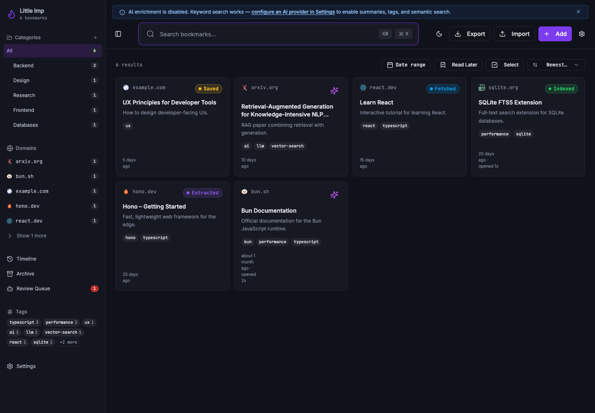
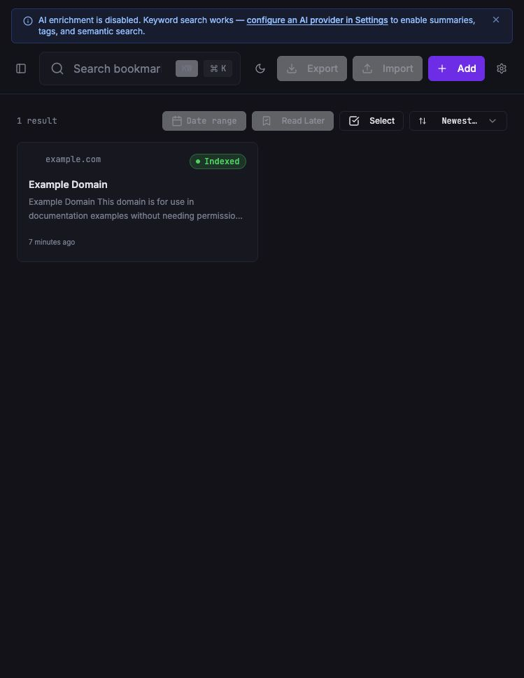
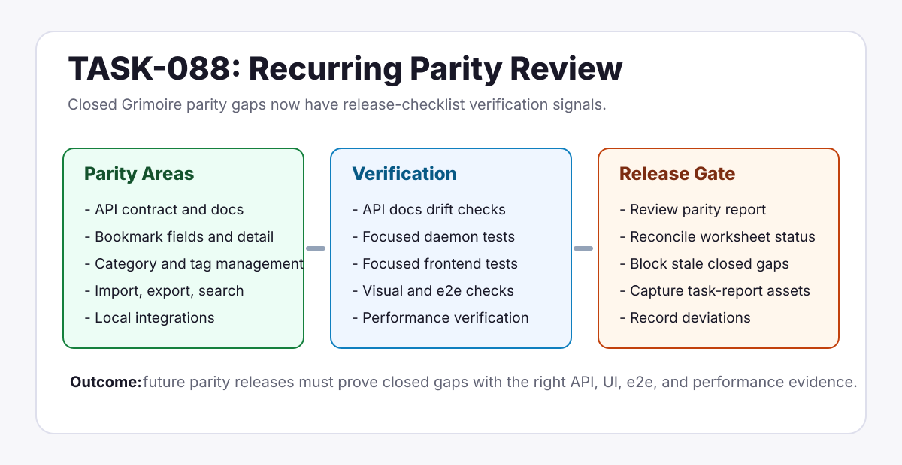
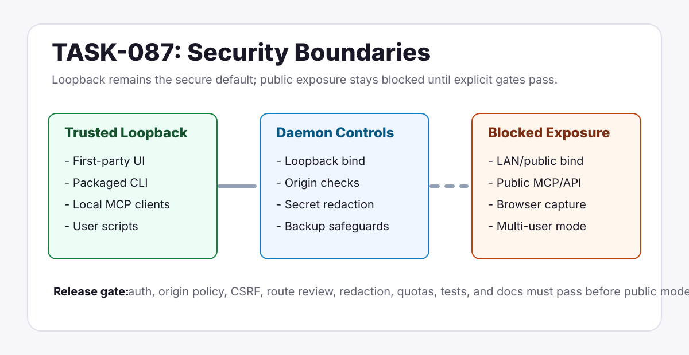

Little Imp Task Reports
May 2026
Monthly archive of task reports for visible product, release, and documentation changes.
Reports

Bookmark Open Metrics
Added persisted open counts, last-opened timestamps, a tracked open endpoint, and shared UI open tracking.
Bookmarks
API
Metrics

First-User UX Smoke Pass
Unblocked and ran a real fresh-data smoke pass with an isolated loopback daemon.
QA
Frontend
Runtime

Read Later Bookmark Flag
Added persisted read-later state, API filters, export fields, and list/detail controls.
Bookmarks
API
UI

Recurring Parity Release Checklist
Added recurring release-planning verification for closed Grimoire parity gaps.
Docs
Parity
QA

Daemon Network Exposure Security Boundaries
Added the canonical loopback threat model and release gates for any future public-network mode.
Security
Docs
Parity

Grimoire Parity Scope And Non-Goals
Locked the parity batch as local-first, single-user, loopback-first, and local-integrations-only.
Docs
Parity
Product